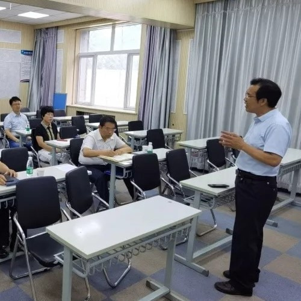
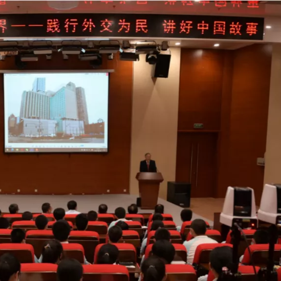

标题
轮播幻灯片下方三列文本的一些代表性占位符内容。这是第一列。
标题
轮播幻灯片下方三列文本的一些代表性占位符内容。这是第二列。
标题
轮播幻灯片下方三列文本的一些代表性占位符内容。这是最后一列。
尚真·课程
“核科技场馆课程”是我校“尚真”课程体系的重要内容，也是我校特色课程之一。四〇一学校发挥毗邻中国原子能科学研究院的地域优势，根据学校自身的性质、特点和条件，开发具有四〇一学校 “尚真”文化特色的“核科技场馆课程”，培养具有科学探索精神的“四〇一学子”。

尚真·党建
四〇一学校将一直跟党走，继续认真落实上级文件要求，有条不紊的开展各项工作，不断创新，推进支部党建工作，在规范党支部建设基础上做好党建品牌建设规划与实施。
尚真·国际
在中国核工业科技馆，开展了“大使带你一起看世界”活动。原驻纽约总领事馆大使衔总领事、驻爱尔兰特命全权大使、驻丹麦王国特命全权大使刘碧伟大使，给房山区四〇一学校的同学们带来了一场精彩绝伦的专题讲座，为同学们打开了看世界的新视野。活动最后，刘碧伟大使引用了毛主席的话勉励大家：“世界是你们的，也是我们的，但是归根结底是你们的。你们青年人朝气蓬勃，正在兴旺时期，好像早晨八九点钟的太阳。希望寄托在你们身上。”在场同学们的掌声经久不息，表达着自己内心的激动。

联系我们
微信：xxxxxxxxxxxx电话：13xxxxxxx01
我们的公众号
关注我们的公众号，以便获得最新资讯
欢迎您的关注